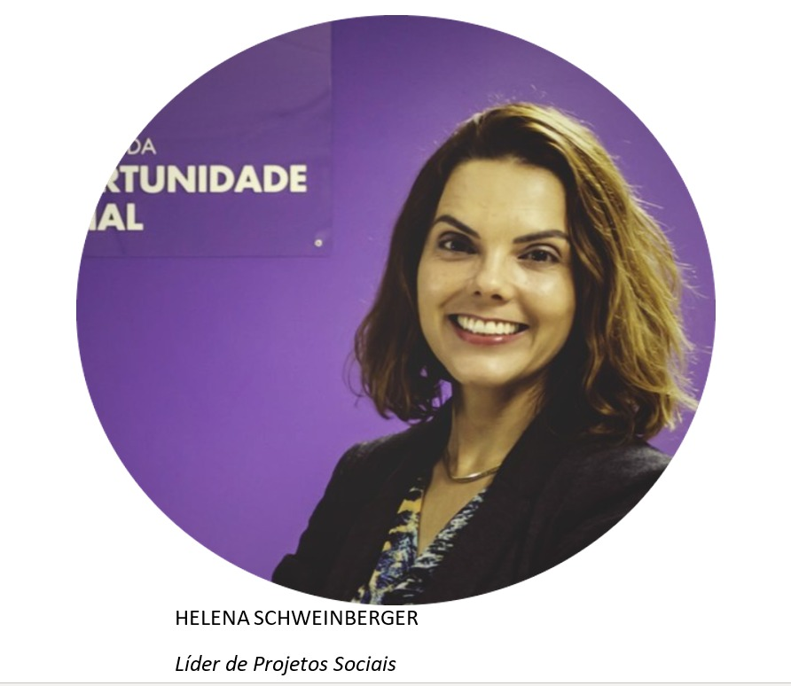

O Instituto da Oportunidade Social (IOS) é uma Entidade Beneficente de Assistência Social certificada pelo
CEBAS, que desde 1998
atua promovendo a formação profissional gratuita e a empregabilidade de jovens e Pessoas com
Deficiência.
O IOS forma profissionais que agregam em sua bagagem, além do conhecimento técnico e capacitação teórica,
competências comportamentais
que o mundo do trabalho busca, como o cuidado com as relações, respeito às diferenças, trabalho em equipe,
solução criativa de problemas,
sempre embasados por uma mentalidade inovadora.
O Instituto Da Oportunidade Social é uma instituição sem fins lucrativos, que atua em rede com outras
Organizações Sociais
ou Entidades Privadas.
A atuação em rede permite que esteja em diversos territórios onde haja a demanda de Formação Profissional
para jovens e pessoas
com deficiência.
Liderança da Unidade Joinville:
Helena Schweinberger

O líder tem um diferencial: fazer com cada um execute sua parte de bom grado, e da melhor maneira
possível.
É um grande dasafio e exige que o mentor do grupo seja dotado de grande inteligência interpessoal.
E, da melhor maneira possível para o grupo e, referindo-se a grupo, entendemos que seja para os
colaboradores e alunos,
pois, em minha opinião, o papel do líder é fazer com cada coloaborador enxergue que em todos crescem junto
com a iniciativa:
tanto os que proveem quanto os que recebem.
Características de um bom líder
- Ter honestidade e integridade
- Ser criativo
- Gostar de trabalhar em equipe
- Ter uma visão ampliada do negócio
- Saber empoderar sua equipe
- Aprender com agilidade
- Ser comprometido
- Ser questionador e curioso
- Saber se comunicar bem
- Ter empatia e compreender diferentes culturas
Curiosidades sobre a líder Helena
Formada em Jornalismo, Helena Schweinberger é colaboradora do IOS há dois anos e exerce papel fundamental na
filial Joinville,
liderando os demais colaboradores da unidade e exercendo com maestria seu papel.
Ela afirma que o que mais gosta de fazer é interagir com as pessoas e ouvir suas histórias e fazer com que
haja a troca de conhecimentos.
Ela diz não gostar de falsidades.
Todos da unidade sabem que Helena pratica muita atividade física, porém não possuem o conhecimento que sua
líder é fascinada por doces 😱😱😱!
Fica entre nós, pra quem leva uma vida bem regrada nos exercícios físicos merece um docinho de vez em quando
não é?
Seu objetivo de vida é seguir evoluindo e se tornar uma pessos melhor a cada dia.
Onde este(a) profissional se vê daqui 10 anos?
"Daqui 10 anos me vejo viajando pelo mundo"


Ações nas escolas
Com o intuíto de captar novos jovens para terem acesso a formação profissional gratuita os colaboradores se
unem para fazer ações em escolas
Os profissionais da filial Joinville tem uma carta na manga para a catação de jovens.
Todos se unem para realizar ações em escolas da região, assim também acontece nos centros de refência da
cidade, tudo em prol de uma
boa educação para os jovens e consequentemente sua formação profissional, e o melhor, tudo de forma
TOTALMENTE GRATUITA!
Os profissionais não medem esforços quando o assunto é "inscritos", se a demanda esta grande os mesmos se
revezam pra entregar um bom
trabalho e captar novos inscritos para receber a capacitação do instituto.